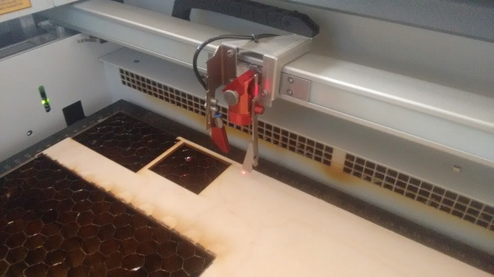
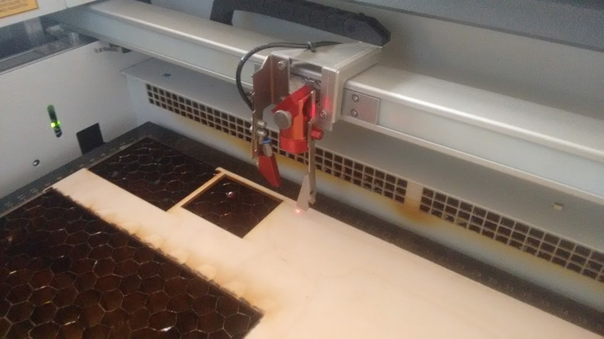
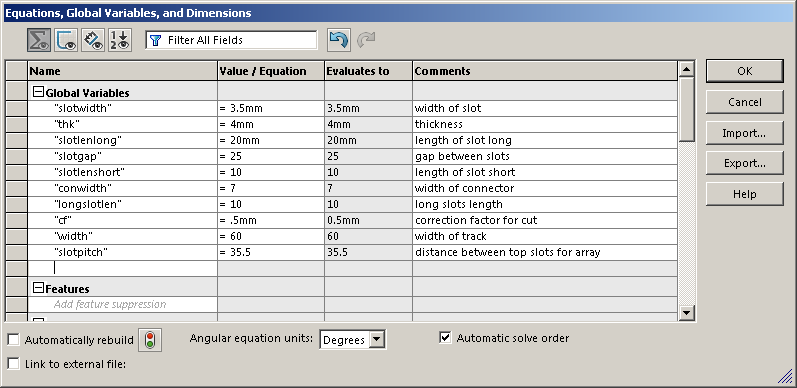

Computer Controlled cutting
This weeks assignment was to design, make and document a parametric press fit kit, accounting for the laser cutting kef that could be aseembled in multiple ways. Also as a group project we need to find the kerf by parametrically varying slot dimensions. And also to cut something von the vinyl cutter.
Laser Cutting
In our lab, we have a Trotec speedy 100, having a Carbon dioxide(CO2 ) laser, and has as work area of 600mmx300mm. We could have any vector files, say like svg, dxf to cut the profiles using this laser cutter. Also we could configure the printer in such a way that we could do engraving also by varying the power. The easiest way to achieve is to have red colour for through cute, and varying scales of black for different depths. I have expirimented using cardboard, vinyl and craftwood. The pressfit assignment was done using cardboard. Engraving/Etching on craft wood gave realistic results. If we need to do etching on acryillic then we need to invert the imagecolours first before converting to grayscale and then print.
 

Also we studied about Kerf which is important when we make press fit connections using slots. The laser burns away a portion of material when it cuts through. This is known as the laser kerf and ranges from 0.08mm – 1mm depending on the material type and other conditional factors. Kerf is determined by material properties and thickness. But other factors also have an impact on how much the laser takes away like the focal length of the lens, pressure of compressed air both have an impact. Kerf widths can vary even on the same material sheet, whether cutting a straight line or a curve line or from laser cutting in the x or Y dimension. The manufacturing tolerance of the material can also impact the kerf. For some applications (for example a slot together product), we will need to account for the kerf within our drawing by adding or subtracting the kerf width from your component dimensions. With some experiments, we found that the kerf allowance that needs to be given for cardboard in our lab is 0.25 on each cut edge. This value was further used in my press fit assembly as a variable in Solidworks, which could be changed later based on different material.
For Finding the Kerf of our machine we have made a kerf gig, which is having a small square of 10mm inner dimension. The Sketch of our gig is shown below, we also gave some engraving lines as measuring reference


We can see there is a gap in between the cuts, it is due to the kerf of laser. We measured the inner and outer measurements of the gig,inner and outer rectangle dimensions measured,taken the average value of the readings and we got the total kerf as 0.65 this accounts the kerf of two sides of the rectangle the actual value of the kerf is half of this value. The calculated value of Kerf is 0.65/2= 0.325mm
Next we did the same thing on acrylic of 3mm thickness and repeated the same measurements and calculated the value of kerf. Here we got the total kerf as 0.488 ans the actual Kerf value is half of the total 0.488/2=0.244mm
We need to account for the kerf within our drawing by adding or subtracting the kerf width from our part dimensions.
Next we made a gig for checking kerf for craft plywood. So we made a small gig which is having different dimensional slots starting from 2.9mm for 3.1mm craft wood and found that the 2.9mm (exact slot value with kerf correction)slot is best for the press fit. The frictional force is minimal in this case and yet giving proper fit.

The track playing set - A Parametric Press Fit
As part of the assignment we need to make a pressfit assembly kit. I thought to make some thing with an application, and finalised to create a track assembly kit as my assignment, as my son is very interested to play with toys cars, trains and tracks. And this is one toy next to the building blocks one could think of multiple configurations, and still find some use. I thought to make a low cost version of these tracks. As our lab is not having any stock of craftwood, the design was made for cardboard. I modelled the various segments using solidworks.
To ensure parametricity and ease of editing to change dimensions, I have used few global variables in solidworks. I also did a test assembly on solidworks to see if everything comes together correctly.

Once the models are made, I created DXF files from solidworks, suing file>saveas>DXF, and by selecting the face to export the edges.
Then the DXF files are imported to Rhino, and they are converted to rhino compatible entities using make2D and then
Then the various segments are grouped together in 600x300 rectangles, so that those can be easily transferred to the laser cutter.
Then the tracks and the various segments are printed on 600x300 cardboard sheets, and assembled in various configurations, to test the proper alignment and fit.
After testing the initial parts for alighnment and fits, few fine tuning of the equations are done in solidworks to ensure proper fit. The major change was made in the redegn of the male and female connectors as shown in the diagrams below.

Once the connectors are revised the tracks are cut again, and various versions were tried out.
Vinyl Cutting
We have a Roland made Vinyle cutter in our lab. This cutter could be controlled using the fab modules. The input format for the vinyl cutter is PNG and we should ensure that the images are monochrome.Even gray scale will not make the cuts properly so the images should be made as black and white only. Photoshop, inkscape or any image editing software couldbe used tocreate the png files. (I have used inkscape).
After readying the image and checking it, we need to open the fab modules. This is done by entering fab on the terminal. We need toselect the input format as image(.png) and the output process as Roland Vinyl Cutter and click the make_png_camm button.

The image is then opened on the fab module, by clicking the load.png button . We could do resizing by clicking the invert.png button.
Further the other values are also set as shown in the image, and we could click make.path. It is to be noted that giving a lower value will make the path more fine, but this may cause abrasions on the vinyl if the value is too low.
The rollers on the machine should be kept within the white marks,. The lever on the rear could be disengaged to move the vinyl sheets. Using the control panel the piece or sheet can be selected and also the orgin could be set.
The files created for this week is available via the link below.